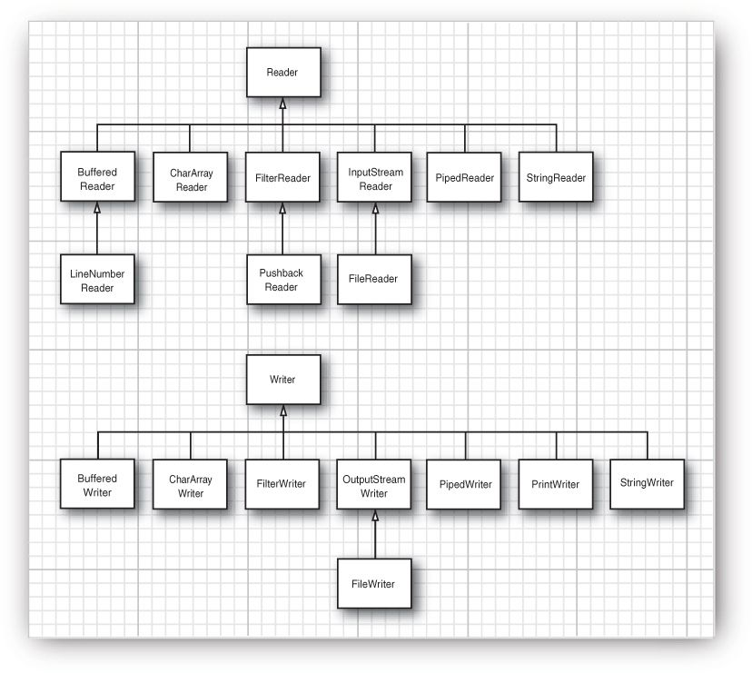

Java Input and Output
1 Reading Input
在标准输出流（standard output stream，that is, the console window）中打印输出结果只需要调用 System.out.println。而从标准输入流（standard input stream）System.in 中读取数据却不是这么简单。读取数据台（console）,你首先需要创建一个和 System.in 联系的 Scanner：
Scanner in = new Scanner(System.in);
接下来你可以使用 Scanner 类的多种方法读取输入。例如，nextLine 方法读取一行输入；next 方法读取单个单词（空白符隔开）；还有 nextInt、nextDouble 等。
查看API：java.util.Scanner、java.lang.System、java.io.File、java.io.FileNotFoundException
java.util.ScannerA Scanner breaks its input into tokens using a delimiter pattern, which by default matches whitespace.
Scanner 构造器：
- Scanner(InputStream source, String charsetName) --- Constructs a new Scanner that produces values scanned from the specified input stream.
- Scanner(File source, String charsetName) throws FileNotFoundException --- Bytes from the file are converted into characters using the specified charset.
Scanner Methods：
- public boolean hasNextLine() --- This method may block while waiting for input.
- public Scanner useDelimiter(Pattern pattern) --- Sets this scanner's delimiting pattern to the specified pattern.
- public String next() --- Finds and returns the next complete token from this scanner. A complete token is preceded and followed by input that matches the delimiter pattern.
- public int nextInt() --- Scans the next token of the input as an int.
System Fields：
- public static final InputStream in --- This stream is already open and ready to supply input data.
2. 输入流和输出流的层次结构
查看API：java.io.BufferedInputStream
BufferedInputStream构造器：
- BufferedInputStream(InputStream in) --- When the BufferedInputStream is created, an internal buffer array is created.
3. Reader and Writer
Byte-oriented streams are inconvenient for processing information stored in Unicode (Unicode uses multiple bytes per character). Therefore, a separate hierarchy provides classes for processing Unicode characters that inherit from the abstract Reader and Writer classes. These classes have read and write operations that are based on two-byte Unicode code units.
最新评论.
该文章目前没有任何评论！